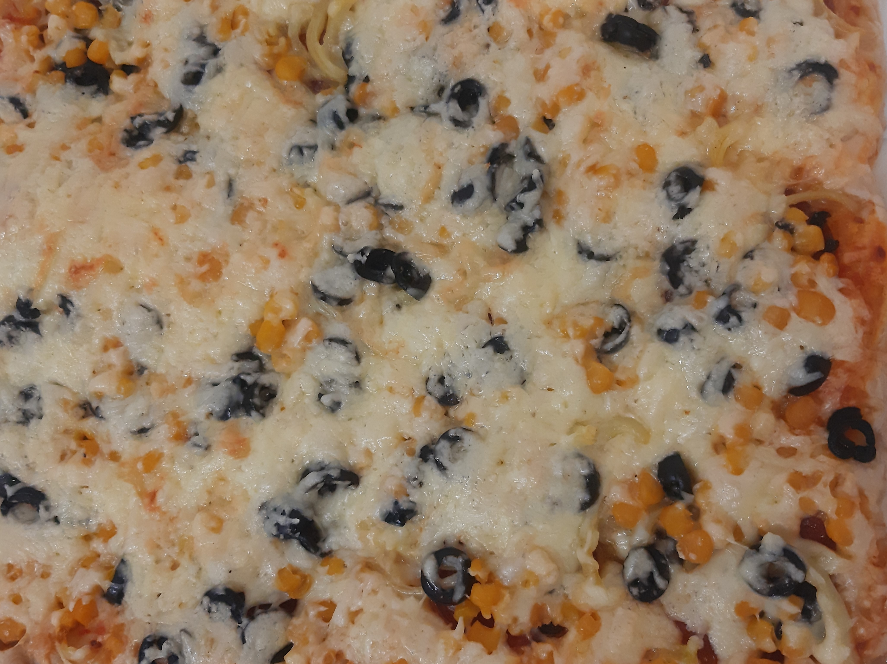

Ingrediente:
-40 g de drojdie proaspătă
-o cană cu apă călduță
-zahăr
-sare
-ulei
-ardei
-ciuperci
-porumb
-măsline
-Mozzarella
-salami
-sos de roșii cu smântână
1. Tăiem măslinele și ardeiul cubulețe mici.
2. Tăiem ciupercile și le călim pe tigaie cu puțin ulei și mirodenii.
3. Amestecăm drojdia cu apa călduță.
4. Punem făină, zahărul și sarea în apă cu drojdie și amestecăm până obținem un aluat potrivit.
5. Cu ajutorul telului întindem aluatul pe masă sub forma tăvii pe care o avem.
6. Ungem tava cu ulei și punem aluatul în ea.
7. Preparăm sosul pentru pizza. Într-un vas mic punem sos de roșii, o lingură de smântână și puțină sare.
8. Ungem aluatul cu sosul preparat și punem mai întâi salami, mai apoi ardei, măsline, porumb și ciuperci.
9. Radem deasupra Mozzarella.
10. Dăm tava în cuptor pentru 25 minute la temperatura de 220°.
Poftă bună, dragii mei! 🤗